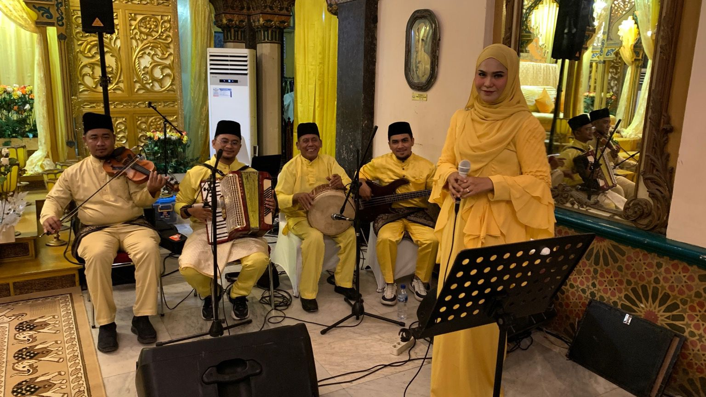

Ahmad Ajie lahir Medan 30 Desember 1999 alamat jln brigjen katamso gg. Merdeka kelurahan sei mati kecamatan Medan maimun, kota Medan
Riwayat Pendidikan:
SD:
SDN 067092
SMP:
MTs Pondok Pesantren Modern Taajussalaam
SMA:
MA Pondok Pesantren Modern Taajussalaam
Perguruan Tinggi:
S1-Pendidikan Bahasa Inggris, Universitas Islam Negeri Sumatera Utara
Pengalaman Kerja:
Pemusik di istana maimun sebagai accordionist
Keterampilan dan Keahlian:
Bermain musik / musisi
Kontak:
081288355429
Portofolio
Akordion
Sebagai seorang pemain akordion dengan pengalaman lebih dari 5 tahun
dalam industri musik, saya telah mengasah kemampuan saya untuk menjadi seorang
pemain yang berdedikasi dan terampil dalam alat musik ini. Dengan dedikasi yang
tinggi, saya telah mengembangkan kefasihan dalam berbagai gaya musik, termasuk
klasik, folk, jazz, dan musik dunia. Tujuan utama saya dalam mengembangkan
keterampilan bermain akordion adalah untuk menyampaikan emosi dan cerita melalui
musik. Saya percaya bahwa musik adalah bahasa universal yang memiliki kekuatan
untuk menginspirasi, menghibur, dan menghubungkan orang dari berbagai latar belakang.
Dengan setiap penampilan, saya bertujuan untuk memperkaya pengalaman pendengar dengan
menghadirkan pertunjukan yang memukau dan berarti. Sebagai seorang pemain akordion, peran
saya tidak hanya terbatas pada menyajikan musik dengan keterampilan teknis, tetapi juga
dalam merangkul peran sebagai seorang penjaga tradisi musik dan pencipta inovatif. Saya
memperjuangkan warisan musik akordion dengan memainkan lagu-lagu klasik serta mengeksplorasi
aransemen baru yang menciptakan pengalaman mendalam bagi pendengar. Selain itu, saya juga
berkolaborasi dengan musisi lain dalam berbagai proyek untuk menciptakan musik yang segar dan
memikat.

Tanggung jawab dan Kontribusi:
Penampilan Festival Musik Melayu di Istana Maimun - Medan
Pada bulan Juli 2022, saya diundang untuk tampil sebagai pemain akordion bersama para
tim saya di Festival Musik Melayu di Istana Maimun kota Medan. Acara ini menampilkan berbagai
musisi lokal yang mempersembahkan musik tradisional dari berbagai budaya. Penampilan saya dijadwalkan
sebagai bagian dari serangkaian pertunjukan yang menampilkan seni musik rakyat.
Tanggung Jawab:
Menyusun repertoar musik yang mencakup lagu-lagu tradisional dari berbagai daerah, termasuk aransemen khas untuk akordion.
Berlatih secara intensif untuk memastikan teknik bermain akordion yang tepat dan ekspresi musikal yang mendalam.
Berkomunikasi dengan panitia acara untuk menyelaraskan detail teknis dan logistik terkait penampilan, termasuk waktu dan persyaratan teknis.
Kontribusi:
Menghadirkan penampilan akordion solo yang memukau dan memikat, mempersembahkan interpretasi pribadi dan menghadirkan nuansa emosional dalam setiap lagu.
Berkolaborasi dengan musisi lokal lainnya untuk memperkaya pengalaman musik dan menambah dimensi artistik dalam pertunjukan.
Pencapaian:
Penampilan saya mendapat sambutan hangat dari penonton dan mendapatkan apresiasi khusus dari
panitia acara. Kontribusi saya dalam mempersembahkan musik tradisional melalui akordion membantu
memperkuat warisan budaya daerah dan memberikan pengalaman musik yang berkesan bagi para penonton.
15 Juli 2022, durasi:3 hari
Services
Saya menawarkan layanan musik akordion yang kreatif dan beragam untuk memenuhi kebutuhan musikal Anda.
Dengan pengalaman bertahun-tahun dalam industri musik, saya siap membawa sentuhan unik akordion ke berbagai
acara dan proyek Anda.
Paket Layanan:
Solo
Menyediakan penampilan solo akordion yang menghibur dan memukau untuk acara-acara khusus seperti pernikahan, pesta ulang tahun, perayaan, dan acara korporat.
Repertoar yang luas mencakup berbagai genre musik termasuk klasik, folk, jazz, dan musik dunia.
nampilan disesuaikan dengan kebutuhan acara Anda.
Kolaborasi
Menyediakan kolaborasi musik akordion dengan musisi lain, seperti penyanyi, gitaris, atau ensemble musik untuk menciptakan pengalaman musik yang unik dan berkesan.
Menciptakan aransemen musik khusus yang sesuai dengan kebutuhan dan preferensi musikal Anda.
Aransemen Musik
Menyediakan layanan pembuatan aransemen musik akordion untuk lagu-lagu atau komposisi musik yang ingin Anda mainkan dengan akordion.
Aransemen disesuaikan dengan gaya musik yang diinginkan dan kebutuhan musikal Anda.
Testimoni dan Ulasan
"Penampilan akordion yang disajikan oleh saudara Ahmad Ajie di pesta pernikahan kami benar-benar menakjubkan. Dia tidak hanya mahir dalam memainkan
alatnya, tetapi juga memberikan sentuhan emosional yang luar biasa dalam setiap lagu. Kami sangat puas dengan hasilnya!"
- Sarah dan John, Pasangan Pengantin
Cara Memesan:
Untuk memesan layanan musik akordion atau untuk mendapatkan penawaran khusus, silakan hubungi saya melalui formulir kontak di website ini atau langsung melalui email atau telepon.
Contact
Alamat Email:
ajieaccordion3012@gmail.com
Lokasi Alamat:
jln brigjen katamso gg. Merdeka kelurahan sei mati kecamatan Medan maimun, kota Medan
Jam Kerja:
Senin - Rabu
Social Media
FAQ
Silahkan kirimkan keluhan berkaitan dengan acara kami